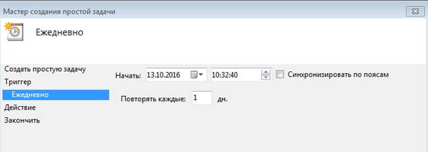

Лабораторная #4 по ОС
Лабораторная работа №4 - Работа с оснастками. Планировщик заданий, системный журнал.
Цель работы: Получить навыки работы с оснастками планировщик заданий и системным журналом.Введение
Who is who? При помощи Планировщика заданий Windows 7 можно запланировать запуск любой программы в определенное время с определенными условиями. Также можно запланировать отправку электронной почты и даже вывод на экран определенного сообщения. Это касаемо Windows систем, если мы говорим про Unix, аналогом планировщика там будет cron, он используется для запуска определенных задач в определенный момент времени. Планировщик задач — программа (служба или демон), часто называемая сервисом операционной системы, которая запускает другие программы в зависимости от различных критериев, как, например:
- наступление определённого времени;
- переход операционной системы в определённое состояние (бездействие, спящий режим и т. д.);
- поступление запроса от администратора через пользовательский интерфейс или через инструменты удалённого администрирования
Планировщик заданий имеет примерно тот же интерфейс, что и другие инструменты администрирования — в левой части древовидная структура папок, по центру — информация о выбранном элементе, справа — основные действия над задачами. Доступ к этим же действиям можно получить из соответствующего пункта главного меню (При выборе конкретной задачи или папки пункты меню меняются на относящиеся к выбранному элементу).
Основные действия в планировщике заданий
В данном инструменте вам доступны следующие действия над задачами:
- Создать простую задачу — создание задания с помощью встроенного мастера.
- Создать задачу — то же, что и в предыдущем пункте, но с ручной настройкой всех параметров
- Импортировать задачу — импорт ранее созданной задачи, которую вы экспортировали. Может пригодиться, если вам нужно настроить выполнение определенного действия на нескольких компьютерах (например, запуск проверки антивирусом, блокировка сайтов и прочее).
- Отображать все выполняемые задачи — позволяет посмотреть список всех задач, которые запущены в настоящий момент времени
- Включить журнал всех заданий — позволяет включить и отключить ведение журнала планировщика заданий (записывает все действия, запускаемые планировщиком)
- Создать папку — служит для создания собственных папок в левой панели. Можно использовать для собственного удобства, чтобы было понятно, что и где вы создали.
- Удалить папку — удаление папки, созданной в предыдущем пункте.
- Экспорт — позволяет экспортировать выбранную задачу для последующего использования на других компьютерах или на этом же, например, после переустановки ОС.
Операционная система постоянно следит за различными событиями возникающими в вашей системе. В Microsoft Windows событие (event) – это любое происшествие в операционной системе, которое записывается в журнал или требует уведомления пользователей или администраторов. Это может быть служба, которая не хочет запускаться, установка устройства или ошибка в работе приложения. События регистрируются и сохраняются в журналах событий Windows и предоставляют важные хронологические сведения, помогающие вести мониторинг системы, поддерживать ее безопасность, устранять ошибки и выполнять диагностику. Необходимо регулярно анализировать информацию, содержащуюся в этих журналах. Вам следует регулярно следить за журналами событий и настраивать операционную систему на сохранение важных системных событий. В том случае, если вы администратор серверов Windows, то необходимо следить за безопасностью их систем, нормальной работой приложений и сервисов, а также проверять сервер на наличие ошибок, способных ухудшить производительность. Если вы пользователь персонального компьютера, то вам следует убедиться в том, что вам доступны соответствующие журналы, необходимые для поддержки своей системы и устранения ошибок.
Программа «Просмотр событий» представляет собой оснастку консоли управления Microsoft (MMC) и предназначена для просмотра и управления журналами событий. Служба Windows, которая управляет протоколированием событий, называется «Журнал событий». В том случае, если она запущена, Windows записывает важные данные в журналы. При помощи программы «Просмотр событий» вы можете выполнять следующие действия:
- Просматривать события определенных журналов;
- Применять фильтры событий и сохранять их для последующего использования в виде настраиваемых представлений;
- Создавать подписки на события и управлять ими
- Назначать выполнение конкретных действий на возникновение определенного события.
В UNIX есть аналог, называется syslog, он идёт по умолчанию, либо auditd, его требуется доставлять. Так же у каждого приложения (В большинстве своём, если мы говорим об чем то крупном, например сервера, тот же самый Apache или про СУБД, например MySQL.) есть свои файлы для логов.
В этой лабораторной мы будет говорить про Windows системы поэтому ниже будет идти описание именно "виндовых" средств, с их Unix аналогами мы познакомимся в поздних лабораторных работах.
Вызов
Теперь о том, как вызвать вышеописанные средства, чтобы познакомиться с их работой.
- С этими двумя оснастками можно работать через mmc, как было показано в прошлой лабораторной работе.
- Так же они есть в панели управления. То есть, откройте «Панель управления», из списка компонентов панели управления выберите «Администрирование» и из списка административных компонентов стоит выбрать «Просмотр событий» или планировщик заданий, либо просто воспользуйтесь поиском по панели управления, что вам и советуется делать;
- Так же их можно вызвать через меню "Выполнить" т.е. сочетание клавиш - win + r. Для этого надо указать их название, а именно в случае с планировщик заданий это - taskschd.msc, а в случае с журналом событий это eventvwr.msc
- Так же их можно вызвать либо через PowerShell, либо cmd, указав их названия или taskschd.msc или eventvwr.msc
Планировщик заданий
Для выполнения работы требуется проделать аналогичные действия представленные ниже.
Начнём с оснастки "Планировщик заданий". Как вызвать её было описано выше, теперь перейдём непосредственно к тому, что требуется сделать и познакомимся с интерфейсом и функционалом.
Начнём с создания задачи. После открытия оснастки перед вами будет вот такое окно, окно стандартное для большинства оснасток windows, слева древовидная структура показывающая различное установленное ПО в вашей системе, и их текущие задачи, которые можно просмотреть и что то с ними сделать, по центру собственно само окно с задачами и их параметрами, в правой части различные функциональные элементы управления. Ваша же задача нажать в правом меню на кнопку «Создать задачу»
Пока создадим простую задачу, то есть в левом меню нажать на «Создать простую задачу, перед вами откроется вот такое окно»
Выбираем триггер, по которому событие будет срабатывать. Требуется выбрать, когда будет выполняться задание: можно выполнять ее по времени, при входе в Windows или включении компьютера, или же по возникновению какого-либо события в системе. При выборе одного из пунктов, вам также предложат задать время выполнения и другие детали.
Указываем время, когда оповещение будет срабатывать
Выбираем, какую программу(или оповещение будет показывать) мы запустим при показе оповещения, я выберу запуск программы, вы можете что то ещё выбрать.
Указываем путь к программе
Все готово. Так же можно поставить галочку на пункте «Открыть окно Совойства после нажатия кнопки Готово »
Чтобы просмотреть созданные задачи требуется нажать в меню слева на «Библиотека планировщика». Помимо моей задачи, там будут находиться задачи для других программ. Кстати, с помощью планировщика так же можно отслеживать деятельность вируса.
Если вдруг задача не выполнилась и в библиотеке стоит ошибка вида:
То требуется вызвать у события контекстное меню и выбрать там «свойства»
Выбрать там пункт условия, и посмотреть на их противоречивость, в моём случае сообщение не показывалось из-за того, что стояла галочка напротив «Запускать только при питании от сети»
Вывод сообщения

Так же помимо простого мастера создания задач, есть продвинутый мастер создания задач, конечный смысл у них одинаковый - задача, но во втором случае даётся больше параметров для настройки оного.
Так же от вас требуется сделать ещё одно событие при помощи продвинутого мастера и отразить это в отчёте. Требуется нажать на «Создать задачу»
В окне Создание задачи введите название новой задачи и ее описание. Если нужно запускать программу с повышенными правами администратора, то активируйте функцию «Выполнить с наивысшими правами.»
Переключитесь на вкладку Триггеры, нажмите кнопку Создать и назначьте дату, время и частоту выполнения задачи. Чтобы установить дату, когда выполнение задачи по расписанию будет прекращено, активируйте функцию Срок действия и укажите дату и время.
Перейдите на вкладку Действия и нажмите кнопку Создать. Чтобы запланировать выполнение программы по указанному расписанию, в раскрывающемся списке Действие выберите Запуск программы и с помощью кнопки Обзор укажите местоположение исполняемого файла.
И дальше в таком же духе.
Журнал событий
Как вызвать данную оснастку было описанно выше. При вызове её появиться следующее окно:
Данное окно обладает стандартной структурой оснасток windows. В левой его части находится древовидная структура в которой отображаются различные журналы, как системные, так и различных приложений. По центру находится окно, в котором отображаются конкретные события в зависимости от выбранного журнала, где их можно посмотреть и узнать содержащуюся в них информацию, и в правой части располагаются различные функциональные кнопки для управления журналами.
Допустим в левой части окна разверните древовидную структуру и найдите пункт "система" и просто просмотрите ваши события и попытайтесь найти что то критическое, у меня что то такое есть.
Выберем критическое события и посмотрим информацию о нём. В моём случае жесткий диск уже сбоит, требуется проверить его через CHKDSK (CHKDSK (сокращение от англ. check disk — проверка диска) — стандартное приложение в операционных системах DOS и Microsoft Windows, которое проверяет жёсткий диск или дискету на ошибки файловой системы (например, один и тот же сектор отмечен как принадлежащий двум разным файлам). CHKDSK также может исправлять найденные ошибки файловой системы.)
И вот такой мониторинг мы может осуществлять со всеми доступными нам журналами.

Теперь по поводу информации, которое может содержать каждое подобное сообщение. Подобная информация, если нам повезёт, поможет найти решения какой-либо проблемы в интернете.
- Имя журнала — имя файла журнала, куда была сохранена информация о событии.
- Источник — название программы, процесса или компонента системы, которое сгенерировало событие (если вы видите здесь Application Error), то имя самого приложение вы можете увидеть в поле выше.
- Код — код события, может помочь найти информацию о нем в Интернете. Правда, искать стоит в англоязычном сегменте по запросу Event ID + цифровое обозначение кода + название приложения, вызывавшего сбой (поскольку коды событий для каждой программы уникальны).
- Код операции — как правило, здесь всегда указано «Сведения», так что толку от этого поля мало.
- Категория задачи, ключевые слова — обычно не используются.
- Пользователь и компьютер — сообщает о том, от имени какого пользователя и на каком компьютере был запущен процесс, вызвавший событие.
В примере выше, искать особо нечего, уже и так сказано, что требуется сделать, но в примере ниже, поиск действительно может чем то помочь. В этом примере skydrive (теперь это onedrive - облачный сервис от microsoft для хранения данных) периодически крашиться и мы можем "загуглить" код ошибки.
Так же бы хотелось отметить, что большинство подобных предупреждений не представляют из себя что то опасное , а сообщения об ошибках не говорят о том, что с ПК, что то не так.
Просмотр журнала производительности.
Каждый журнал в этой оснастке разбирать не имеет смысла, из-за этого пройдёмся по основным, например журнал производительности Windows. Для этого в правой панели откройте Журналы приложений и служб — Microsoft — Windows — Diagnostics-Perfomance — Работает и посмотрите, есть ли среди событий какие-либо ошибки — они сообщают о том, что какой-то компонент или программа привела к замедлению загрузки Windows. По двойному клику по событию, вы можете вызвать подробную информацию о нем.
Или например
С вашей стороны логично было бы предположить, что ориентироваться в таком большом количестве событий довольно проблематично, и вот как раз для этой цели есть фильтры и называются они "настраиваемое представление" и находятся в левой части окна с оснасткой, там есть кнопка "Создать настраиваемое представление"
В моем случае я просто выбрал уровень события "критический" и выбрал журнал из которого события будут собственно фильтроваться.
И вот так все это будет выглядит в итоге.
Так же помимо всего прочего облегчить жизнь вам поможет контекстное меню, у каждого журнала, где можно осуществить поиск по конкретному журнал и так же настроить его. Выполните функции этого меню и отразите это в отчёте, например создать настраиваемое представление, изменить свойства журнала, воспользоваться поиском, сохранить все события в отдельный файл то есть произведите экспорт и импорт журналов, так же отсортируйте и сгруппируйте записи в журнале с помощью этого меню и отразите действия в отчёте.
Системный монитор
Системный монитор Windows можно использовать для анализа влияния работы программ на производительность компьютера, как в реальном времени, так и посредством сбора данных журнала для последующей обработки. Системный монитор Windows использует счетчики производительности, данные трассировки событий и сведения о конфигурации, которые можно объединять в группы сборщиков данных. В общем итоге он позволяет отслеживать использование системных ресурсов, сбор и просмотр текущих данных производительности в виде счетчиков ресурсов сервера, например счетчиков использования процессора и оперативной памяти, а также многих ресурсов Microsoft SQL Server, таких как блокировки и транзакции.
Запуск системного монитора
Для запуска системного монитора требуется вызвать меню "Выполнить" и написать perfmon. Или воспользоваться поиском в панели управления управления, написав "монитор ресурсов". Ниже будут снимки экрана из windows 7,если вы используете другую ОС, некоторые функции могут быть в других местах.
Перед вами собственно будет вот такое окно:
У вас скорее всего будет несколько меньшее количество различных счетчиков, чтобы добавить новый счётчик к уже имеющимся требуется вызвать контекстное меню:
И далее выбрать из уже имеющихся счётчиков, в моем случае я просто добавлю счётчик, который отображает время бездействия процессора, выделяете новый счетчик и жмёте кнопку "Добавить" и потом ОК.

Вот такой график появиться в итоге.
Теперь добавим новую группу сборщиков данных. Первые 2 шага, это имя, и путь куда будет сохраняться файл монитора ресурсов, далее добавите необходимые счётчики (точно так же как и при добавлении просто счётчика в монитор ресурсов.)
Вот такая штука у вас получиться в итоге. Собственно для запуска надо нажать в контекстном меню кнопку "пуск"
Как только вы это сделаете сразу создаться такой вот лог, в который будет записываться производительность выбранный счётчиков системы.
Этот файл потом можно будет открыть и посмотреть, что к чему. Просматривать файлы журнала можно на любом компьютере, где установлен Системный монитор. Таким образом данные счетчиков можно собирать на нескольких компьютерах, а просматривать на одном, их можно отправлять по электронной почте и т. д.
Также есть возможность настроить запуск сборщика данных по расписанию. Для этого следует кликнуть правой кнопкой мыши по группе сборщиков данных, для которой необходимо настроить расписание, и в контекстном меню выбрать пункт «Свойства» (Properties).
Вот на этом пока закончим. Перед вами стоит задача проделать аналогичные действия, что были описаны выше.
Ссылки
- По поводу монитора ресурсов
- По поводу монитора ресурсов 2
- Так же и тут можно посмотреть по поводу монитора ресурсов
- Об просмотре событий
- Тоже о просмотре событий
- Cron - аналог под unix
- Аудит системных событий в Linux
Контрольные вопросы
- Что такое монитор ресурсов, и что он позволяет сделать.
- Что такое аудит, как он осуществляется в Windows.
- Что такое планировщик событий, описать функционал планировщика событий.